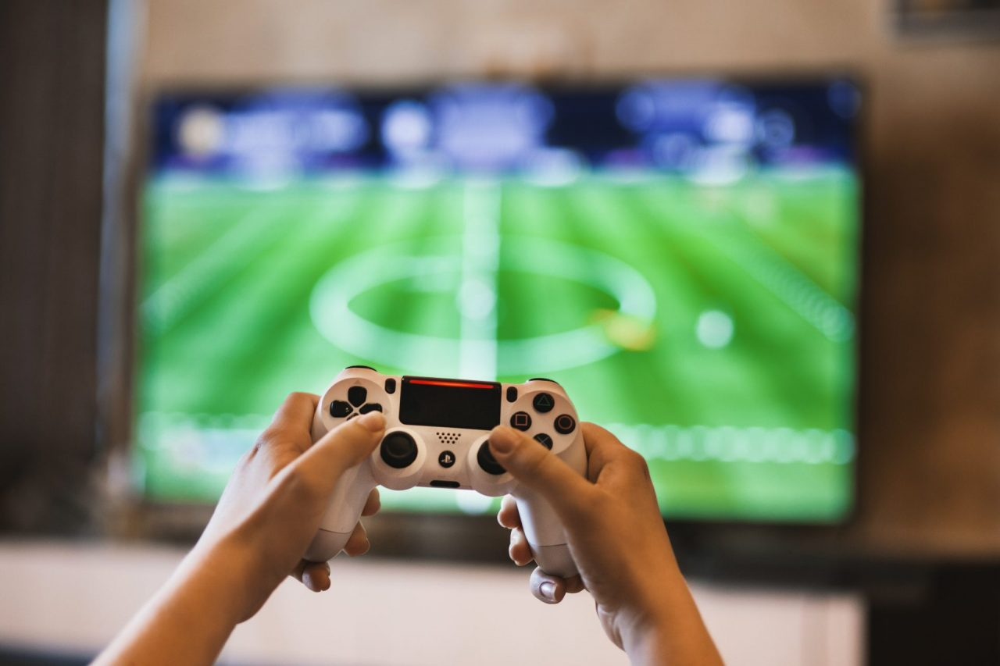

A Revolução dos Jogos: Uma Jornada através da Era Digital
Nos últimos anos, os jogos eletrônicos têm passado por uma verdadeira revolução. O que antes era visto como uma forma simples de entretenimento evoluiu para algo muito mais complexo e significativo. Hoje, os jogos não são apenas uma forma de escapismo, mas também uma forma de arte, um meio de contar histórias poderosas e até mesmo uma ferramenta educacional. Neste artigo, vamos explorar a jornada emocionante dos jogos eletrônicos através da era digital e examinar como eles se tornaram uma parte essencial da cultura contemporânea.
Os jogos eletrônicos não são uma invenção recente. Na verdade, eles têm suas raízes na década de 1950, quando os primeiros jogos de computador foram desenvolvidos em universidades e laboratórios de pesquisa. No entanto, foi na década de 1970 que os jogos eletrônicos começaram a se popularizar, com o lançamento de arcades e consoles domésticos como o Atari 2600. Estes jogos eram simples, muitas vezes compostos por gráficos rudimentares e mecânicas de jogo básicas, mas eles capturaram a imaginação de milhões de pessoas em todo o mundo.
Nos anos seguintes, os consoles de videogame se tornaram cada vez mais sofisticados, com gráficos melhores, controles mais intuitivos e jogos mais complexos. Consoles icônicos como o Nintendo Entertainment System (NES), o Super Nintendo Entertainment System (SNES) e o PlayStation ajudaram a definir gerações inteiras de jogadores. Os jogos se tornaram mais do que apenas uma forma de passar o tempo; eles se tornaram uma parte integral da cultura popular.
Com o advento da internet e o avanço da tecnologia, os jogos eletrônicos passaram por uma revolução digital. Os jogadores agora podiam se conectar uns com os outros em todo o mundo, participar de competições online e compartilhar experiências de jogo em tempo real. Jogos massivamente multiplayer online (MMOs) como World of Warcraft e jogos de batalha real (battle royale) como Fortnite se tornaram fenômenos culturais, reunindo milhões de jogadores em todo o mundo.
Uma das maiores mudanças na indústria de jogos eletrônicos nas últimas décadas tem sido a diversificação dos tipos de jogos disponíveis. De jogos de ação e aventura a quebra-cabeças, simulações e experiências narrativas, há algo para todos os gostos e interesses. Além disso, os jogos estão se tornando cada vez mais inclusivos, com mais representação de pessoas de diferentes origens, gêneros e identidades.
saiba mais sobre: aquiConclusão
Os jogos eletrônicos têm se tornado cada vez mais significativos na cultura contemporânea. Desde os primeiros jogos de computador até os mais recentes, eles se tornaram uma forma de entretenimento, uma forma de arte e uma ferramenta educacional. Neste artigo, vamos explorar a jornada emocional dos jogos eletrônicos através da era digital e examinar como eles se tornam uma parte essencial da cultura contemporânea.